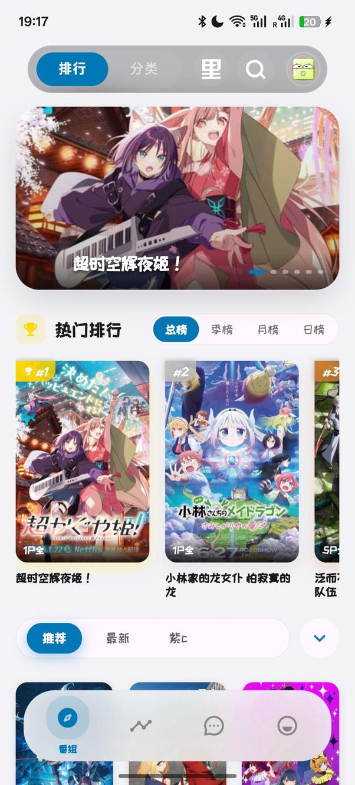

Baka 到底好不好用？八个快问快答帮你拿主意
Baka 是一款主打本地番剧播放的安卓应用，支持自定义视频源、Anime4K 画质增强和动态脚本扩展。这篇快问快答把你关心的点一次说清。
整理一篇关于 Baka 的快问快答——不管你是刚听说这个名字，还是已经装了但没玩透，这八组问答应该能替你把该问的都问到。
Baka 到底是什么？一句话能说清吗？
Baka 的官网上有它的完整功能清单，简单说它是一款面向安卓用户的本地番剧播放器，核心卖点是 mpv 播放内核 + Anime4K AI 画质增强 + 动态视频源脚本。跟大多数在线追番 App 不同，Baka 本身不提供内容，它更像一个"万能播放器"——你把源配好，它负责用最强的内核给你播，还能自动加弹幕、增强画质、跨设备同步进度。
简单说：在线追番 App 给你片源也给你播放器，但片源容易挂；Baka 只管播放器，源需要自己找或用社区脚本，换来的是最强播放体验和永不消失的自由度。

谁需要用 Baka？不是所有人都值得折腾
如果你习惯用 B 站、爱奇艺这些大厂 App，而且从来没碰到过想看的番找不到、画质糊、弹幕太少这些问题——那你大概率不需要 Baka，折腾源和脚本对你来说是负担。
但如果符合下面任意一条，Baka 就值得试：一是你追的番在主流平台没有或画质渣；二是你在意播放体验（比如想用键盘快捷键、想自己调弹幕密度）；三是你有收藏本地番剧资源的习惯，想找一个比系统播放器强得多的播放工具；四是你喜欢折腾，想自己写适配器脚本对接小众 API。
怎么装？难不难？
不难。APK 安装包从官方下载拿了直接装就行，不需要 root，不需要特殊权限。装好之后第一次打开，Baka 会引导你配置第一个视频源——这是最关键的一步。
Baka 社区有大量现成的脚本适配器，覆盖了主流番剧站点和一些小众源。你可以先在脚本仓库挑几个口碑好的，复制 raw 链接，在 Baka 的源管理里点"远程导入"，粘贴链接就能用。JSON 格式的适配器连代码都不用看，直接导入就行；JS 格式的如果想自己改，需要一点 JavaScript 基础。

核心功能除了播放还有什么？
三个能力值得单独提：Anime4K 画质增强、智能弹幕系统、动态脚本扩展。
Anime4K 是 AI 画质增强算法，Baka 支持三种模式——模式 A 针对 1080p 源优化边缘锐度，模式 B 针对 720p 源补细节，模式 C 针对 480p 源做超分辨率。快捷键 Ctrl + 1/2/3 一键切换，Ctrl + 0 关闭。实际效果看片源，720p 升 1080p 的提升最明显，480p 有时会出现伪影。
弹幕系统支持滚动弹幕、静止弹幕和高级特效弹幕，渲染层独立于视频层和字幕层，所以弹幕不会被 Anime4K 增强糊掉。弹幕密度、字号、滚动速度都能调，还能设置只在顶部 1/4 或底部 1/4 显示，密集时自动避让减少重叠。
脚本扩展是 Baka 最硬核的能力。除了导入社区现成脚本，你可以自己写 JSON 声明式适配器（会 JSON 就行）或者 JS 编程式适配器——这一套在Baka文档里有完整的格式说明和 API 参考，照着就能写。Baka 内置了 fetch、MD5/SHA1 哈希、HTML 解析等 API，本地调试放脚本目录重启 Baka 就能测。

多设备同步是 Baka 的强项吗？
是，而且做得挺细，但也容易踩坑。同步内容包括观看进度、收藏夹、屏蔽规则，两端登同一个账号后自动同步，支持冲突策略（最大进度优先 / 手动解决）和手动数据检查。
踩坑集中在几个地方：登错账号（两台设备用户名不完全一致就会不同步）、同步频率设太长（默认 5 分钟，可以临时调到 30 秒测试）、只开 Wi-Fi 同步但两端不在 Wi-Fi 下。还有个常见 bug 是同步长时间挂起——手动触发一次"立即同步"通常能解决，不行就检查网络有没有被企业/学校 Wi-Fi 限制。
最保险的做法是定期手动导出：观看历史每周导一次，收藏夹每月导一次，屏蔽规则半年导一次。真碰上云端数据损坏或同步覆盖，有备份就不慌。
快捷键体系值不值得记？
桌面端或平板接键盘的场景下非常值。Baka 快捷键基于 mpv 默认配置，针对动漫场景优化过。Space/K 播放暂停，←/→ 快退快进 5 秒，↑/↓ 跳 1 分钟，Page Up/Down 上下集，F 弹幕显示隐藏，J 切换字幕轨，Ctrl + J 字幕后移 0.5 秒——这些是最高频的。
还有几个实用的：Ctrl + Shift + S 截图（默认带弹幕，想截纯画面先按 F 隐藏弹幕），? 打开帮助面板查全部快捷键，o 显示播放信息面板（分辨率、解码方式、当前进度）。部分版本支持自定义映射，可以把任何功能绑到自定义键位。
跟同类播放器比，Baka 有什么短板？
三个短板：一是脚本生态虽然丰富但缺乏统一标准，不同作者写的脚本质量参差不齐，有的源挂了没人更；二是 Android 端比桌面端功能少一些，比如快捷键自定义选项有限；三是同步机制虽然完整但偶发 bug，特别是跨网络环境切换时，需要手动触发或导出数据兜底。
另外 Baka 不提供内置字幕库，需要自己配，这点和一些同类播放器不同。好消息是脚本适配器可以对接字幕 API，社区也有人写了字幕源脚本。
值得长期用吗？
看你怎么用。如果你只是偶尔追番、用主流 App 就够了，Baka 不值得花时间折腾。但如果你在意画质、想摆脱单平台绑定、或者已经有本地番剧资源需要一个专业播放器，Baka 是目前安卓端最好的选择之一——mpv 内核 + Anime4K + 脚本扩展这三件套，同价位没有对手。
真要入坑的话，建议先从社区挑 2~3 个口碑稳定的源脚本跑起来，用一两周再决定要不要深挖脚本开发。不用一开始就追求完美配置，够用就行。